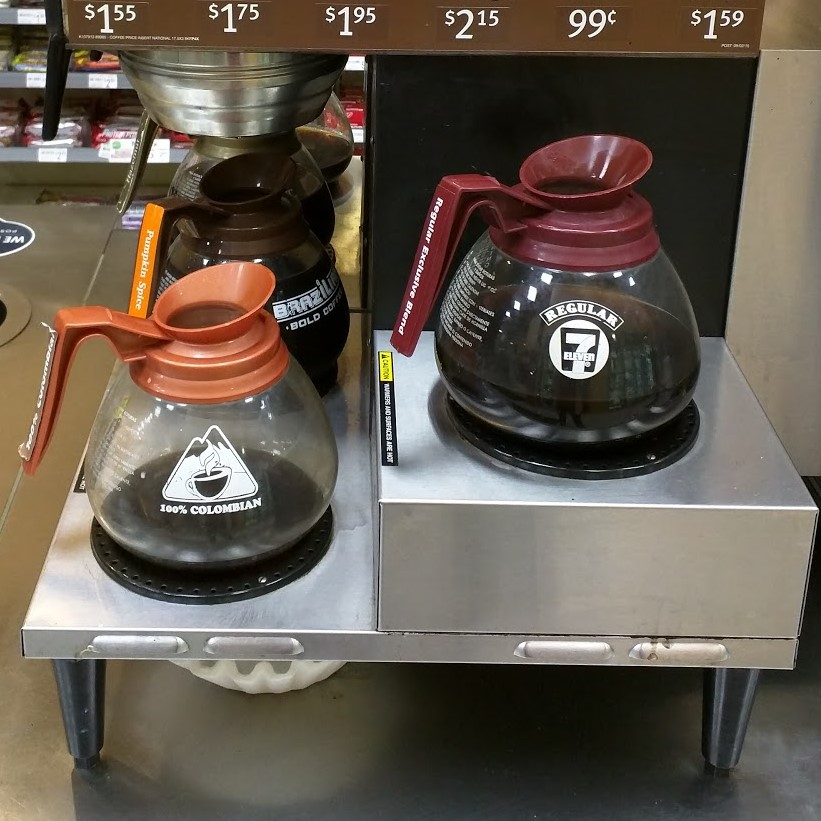
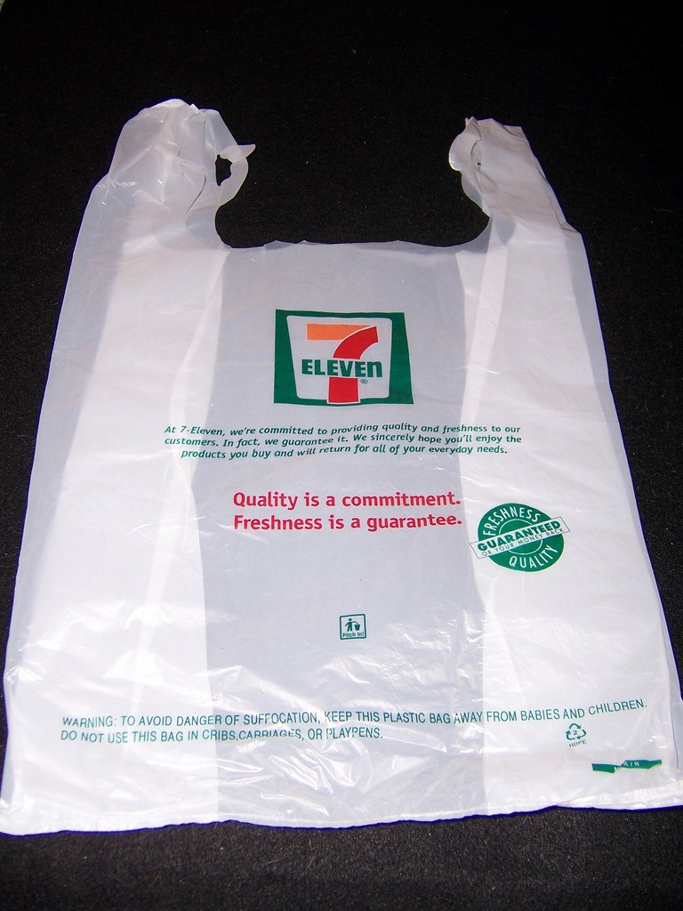

Background
Once upon a time, I lived in a far away land called Norfolk, Virginia. The Navy sent my spouse to be stationed there, and I followed. Before I joined the military myself, I needed to work part time as our housing was paid for. We had just one car, and the only place that was hiring within walking distance was 7Eleven®.
The job itself was easy: cleaning everything, helping customers pay for their stuff, tending to the hotdogs, etc. My coworkers were a colorful lot as well, and made the eight-hour shifts pass quickly regardless of how many customers came in or how much work we had to do.
Speaking of customers, many different types of people shopped at our store. Some wonderful, some awful, but most of them I never saw again.
The Regulars*
- The Coffee Lady: She came in every morning at about 6 am and if the coffee was not currently dripping into the pot, she would get under the counters and grab the supplies to make her own. She sounds obnoxious, but was just very serious about coffee. Other than this oddity she generally brightened the morning.
- John: He was a Jehova's Witness and would bring in copies of The Watchtower in case we asked, but didn't force it on us. He liked to hang out with us anywhere between 11 pm to 4 am, and could stay for hours. He always got a refill of a Big Gulp and two hotdogs and was overall a very kind and silly man.
- Henry: Henry worked as a bouncer at Mojo Bones, a local bar. He came in once every few days, bought a few snacks, and left. I mostly talked to him at his job.
- Nathan: Nathan was our usual Pepsi product delivery guy. He always found a way to make our shift a little better between rushing to fill our shelves and scoot.
- Mr. Gold Dollars: We had assumed he was a homeless man, as he always wore the same clothes and did not bathe. No one knew his name, and we never heard him speak but one time. We called him Mr. Gold Dollars because he either paid in sticky, crisp one dollar bills, or in mint-condition gold dollar coins.
Mr. Gold Dollars
He was the most peculiar of the bunch, as he had a very strict set of rules he had to follow while navigating the store. He would come down the sidewalk on the opposite side of the street, touch a light post, cross the street, look through the ash tray built into our trashcan and take any butts he'd find, check the trashcan on the other side of the door, cross back over to touch the other light post, then cross and come back into the store. Once inside the store he would go around the outside of the aisles to grab a coffee, and then stand in line. At the counter, as he waited for us to ring him up, he would twirl his finger over the rim of the uncovered coffee cup, pay, and then leave.
My Prior Experiences With Robberies
We had a bunch of people come in and take stuff. We even had one man come into the store, grab two 12 packs of beer, walk past the register and say "Thank you!" while smiling. But as far as "guns out, give-me-all-your-cash," we had that happen a total four times while I worked there. I ended up being present for three of them.
Robberies typically are a lot faster and quieter than you see in the movies. There's no shouting, no punching, and even though I was standing within five feet of the register for one of them, I had no idea it had happened until afterwards. I actually made the guy I was working with open the register so that I could see that the money was gone before I let him call the cops because I didn't believe it had happened. You don't see those types of robberies reported often, however, because they make for boring news. The one I knew happened though was extremely odd.
The Robbery
Susan - my manager - and I worked together on the morning shift that day. Before the morning rush, it was her job to ready the deposit and take it to the bank, leaving me alone in the story for about 20 minutes. It was daylight, 7 am, and dead so I wasn't worried about it. A typical morning.
Mr. Gold Dollars came in after doing his normal routine outside. Only once inside, he broke from tradition and came straight to the counter.
"Good morning!" I said. "You getting the usual today?"
He gave be a strange look, and then muttered something.
"I'm sorry, what did you say?" I leaned forward to try to hear him, despite the overpowering smell.
He spoke a little louder this time, but what I heard was not...expected. "I don't agree with what 7Eleven is doing with the money, so I'm going to take all the money and the store."
How do you respond to something like that? "I'm sorry, what?"
He then pulled out a small gun to show me, and quickly tucked it away again.
I kid you not, the very next thing out of my mouth was an oddly chipper, "Would you like that in a bag, sir?"
He said nothing, so I opened up the register and started stuffing the money into a plastic bag.
At this point, he gave me another strange look, some kind of cross between confusion and concern, and then walked into the bathroom. I promptly pushed all of the panic buttons and went back to stuffing the bag, right as Henry the bouncer and Nathan walked in.
"What…what are you doing?"
I explained the situation, and Nathan immediately jumped into action.
"Oh HELL no!" He ran to the bathroom door and pounded on it. "You get out of there right now!" He continued banging for about three more seconds, when the door cracked open.
Nathan and Mr. Gold Dollars stared at one another for a few seconds, and then the now-robber just kind of...walked past him back to the register to talk to me. I had to lean forward again to hear him whisper.
"Now that I own the store, I need you to show me around."
Henry stepped in then, putting his arm around the man. "Hey, we don't need to do this man. Let's just get you out of here and we can call it a day, yeah?"
From there, the man walked out of the store. The police picked him up about ten minutes later, and made my manager tell him that he was no longer allowed on the property, but every single day he would still walk to the first lightpost on the opposite side of the street, stand and stare at the store, then walk over the other lightpost before leaving. Unless he saw I was working, then he would stand and stare for another 20 minutes or so.